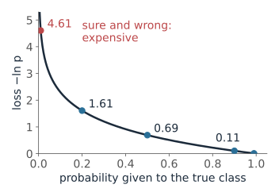
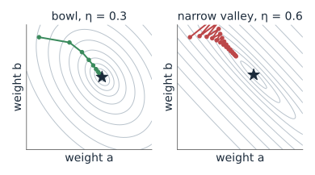
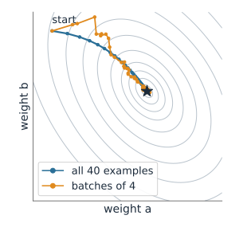
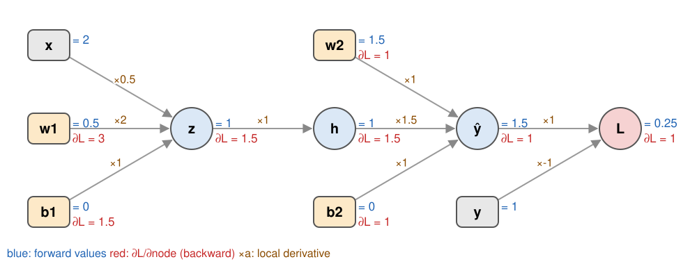
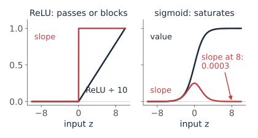
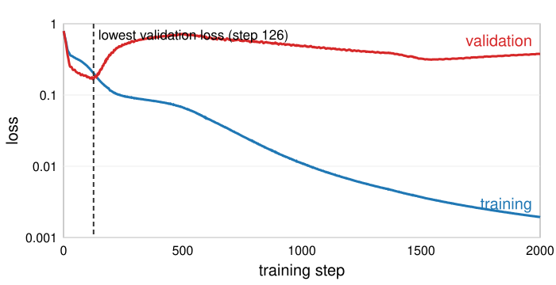

Learning: loss, gradient descent and backpropagation
About this lecture
The last unit built networks and said “training walks downhill”. This unit opens that box.
- A loss says how wrong the network is: squared error for numbers, cross-entropy for classes.
- Gradient descent steps downhill; the learning rate sets the step, a random mini-batch of examples estimates the slope.
- Backpropagation computes the slope for every weight in one backward pass: the chain rule, organised.
- Learning curves show overfitting; weight decay, dropout and more data fight it.
Slides titled The math give the formulas and proofs; the ideas are complete without them.
The loss: how wrong is the network?
One number for all training examples, averaged; training makes it small.
- Numbers (a brightness, a size): mean squared error, (\hat y - y)^2 averaged.
- Classes: the network gives probabilities; the loss is cross-entropy, -\log p_{\text{true class}}.

| probability given to the true class | 0.99 | 0.9 | 0.5 | 0.2 | 0.01 |
|---|---|---|---|---|---|
| cross-entropy -\ln p | 0.01 | 0.11 | 0.69 | 1.61 | 4.61 |
A confident wrong answer costs far more than a hesitant one. 0.69 = \ln 2 is “50 : 50, no idea”.
The math: softmax and cross-entropy
Scores \mathbf z, probabilities p_k = e^{z_k}/\sum_j e^{z_j}, true class c (one-hot \mathbf y):
\mathcal L = -\log p_c = -z_c + \log\sum_j e^{z_j}, \qquad \frac{\partial\mathcal L}{\partial z_k} = p_k - y_k
- The gradient is “predicted minus wanted”: no gradient when the network is right and sure, a gradient of almost -1 on the true score when it is sure and wrong.
- Two classes with one sigmoid output p = 1/(1 + e^{-z}): \mathcal L = -[y\log p + (1 - y)\log(1 - p)], again \partial\mathcal L/\partial z = p - y.
- Cross-entropy = negative log-likelihood of the training labels: minimising it is maximum likelihood.
Gradient descent: walk downhill
The loss is a landscape over all the weights. From the current weights, step a little in the steepest downhill direction; repeat.
- Step length = learning rate \eta. Too small: it takes forever. Too large: it jumps across the valley, or out of it.
- Recall the one-weight example of the last unit: \eta = 0.1, 0.125, 0.25, 0.5 gave losses 0.36, 0, 9, 81 after one step from 9.
- A narrow valley makes a single \eta awkward: big enough for the gentle direction is too big for the steep one, so the path zig-zags (right).
- Different starts can end in different valleys: different networks.

Try it: walking downhill
Mini-batches and epochs
The loss is an average over all training images, say 60,000. Its exact gradient needs all of them for every step: too slow.
- Instead, take a random mini-batch (32 images), compute the gradient on it, step. A noisy but cheap estimate of the true slope.
- Stochastic gradient descent (SGD): one step per mini-batch. One epoch = one pass through all the data: 60{,}000/32 = 1875 steps.
- The noise is not just tolerated: it shakes the weights out of flat regions and narrow dips.
- Momentum: keep part of the previous step, like a ball rolling downhill; it smooths zig-zags.

The math: the update rules
\mathbf w \leftarrow \mathbf w - \eta\,\nabla_{\mathbf w}\mathcal L, \qquad \mathcal L(\mathbf w) = \frac1N\sum_{n=1}^N \ell_n(\mathbf w)
- Mini-batch B of size m drawn uniformly: \mathbf g_B = \frac1m\sum_{n\in B}\nabla\ell_n has \mathbb E[\mathbf g_B] = \nabla\mathcal L (unbiased); its variance falls like 1/m.
- Near a minimum the loss is a quadratic bowl with Hessian H; plain descent is stable only for \eta < 2/\lambda_{\max}(H), and the slow direction needs \approx 1/(\eta\lambda_{\min}) steps: elongated bowls are slow.
- Momentum: \mathbf v \leftarrow \beta\mathbf v + \mathbf g, \mathbf w \leftarrow \mathbf w - \eta\mathbf v (typically \beta = 0.9).
- Adam: momentum plus a separate step size per weight, dividing by a running average of \sqrt{g^2} (Kingma and Ba, 2015). The default in practice; the VAE day uses it.
Backpropagation: the network as a graph

- Forward: values flow left to right (blue): z = w_1x + b_1, h = \text{ReLU}(z), \hat y = w_2h + b_2, \mathcal L = (\hat y - y)^2.
- Backward: from the loss, each node passes on its gradient times its local derivative (red). Every weight gets \partial\mathcal L/\partial w.
Backprop by hand
x = 2, y = 1, w_1 = 0.5, b_1 = 0, w_2 = 1.5, b_2 = 0.
| forward | backward: \partial\mathcal L/\partial\,\cdot | |
|---|---|---|
| \mathcal L = (\hat y - y)^2 | 0.25 | 1 |
| \hat y = w_2h + b_2 | 1.5 | 2(\hat y - y) = 1 |
| w_2, b_2 | 1 \cdot h = 1, \ 1 | |
| h = \text{ReLU}(z) | 1 | 1 \cdot w_2 = 1.5 |
| z = w_1x + b_1 | 1 | 1.5 \cdot 1 = 1.5 (ReLU is on) |
| w_1, b_1 | 1.5 \cdot x = 3, \ 1.5 |
Update with \eta = 0.1: w_1 = 0.2, b_1 = -0.15, w_2 = 1.4, b_2 = -0.1 → \mathcal L = 0.5625: worse! With \eta = 0.05: \mathcal L = 0.021.
The math: backpropagation
Chain rule on the graph: \partial\mathcal L/\partial w = \sum_{\text{paths } w \to \mathcal L}\ \prod_{\text{edges}} local derivatives. Organised layer by layer, with \mathbf z^{(l)} = W^{(l)}\mathbf a^{(l-1)} + \mathbf b^{(l)}, \mathbf a^{(l)} = \varphi(\mathbf z^{(l)}) and \boldsymbol\delta^{(l)} = \partial\mathcal L/\partial\mathbf z^{(l)}:
\boldsymbol\delta^{(l-1)} = \big((W^{(l)})^\top\boldsymbol\delta^{(l)}\big) \odot \varphi'(\mathbf z^{(l-1)}), \qquad \frac{\partial\mathcal L}{\partial W^{(l)}} = \boldsymbol\delta^{(l)}(\mathbf a^{(l-1)})^\top, \qquad \frac{\partial\mathcal L}{\partial\mathbf b^{(l)}} = \boldsymbol\delta^{(l)}
- Start: \boldsymbol\delta^{(L)} = \mathbf p - \mathbf y (softmax + cross-entropy) or 2(\hat{\mathbf y} - \mathbf y) (squared error).
- The backward pass is one matrix–vector product per layer, like the forward pass: the cost is about twice a forward pass, whatever the number of weights (Rumelhart, Hinton and Williams, 1986). Finite differences would need one forward pass per weight.
Try it: forward, backward, update
What the local derivatives tell us
- ReLU passes the gradient (derivative 1) or blocks it (0). A unit that is off for every training example never gets a gradient again: a dead unit. A too large learning rate can kill many at once.
- Sigmoid and tanh have derivatives near 0 when the input is large: a saturated unit passes almost nothing back. Through many such layers the gradient shrinks layer by layer: vanishing gradients.
- That is why deep sigmoid networks were hard to train, and why ReLU took over around 2010.

Overfitting: recall, and learning curves

Day 33 (random forests): fit on training data, choose settings on validation data, report once on test data. A too flexible model fits the noise.
- New here: plot the loss on both sets during training: the learning curves.
- Training loss keeps falling. Validation loss falls, then rises: from there on the network memorises.
- Early stopping: keep the weights from the step with the lowest validation loss.
Regularisation: making memorising harder
- Weight decay: add \lambda\sum w^2 to the loss. Large weights make sharp, wiggly boundaries; small weights make smooth ones.
- Dropout: during training, silence each hidden unit at random (say with probability 0.4). No unit can rely on a particular other unit; at test time all units are used.
- More data, and data augmentation: train on shifted, rotated, brightened copies of the images (next unit).
- And the simplest: a smaller network, or early stopping.

The math: weight decay and dropout
- Weight decay: \mathcal L_\lambda(\mathbf w) = \mathcal L(\mathbf w) + \lambda\|\mathbf w\|^2, gradient \nabla\mathcal L + 2\lambda\mathbf w: every step also shrinks every weight by the factor 1 - 2\eta\lambda. The same penalty as ridge regression (Tikhonov regularisation, the deconvolution day).
- Dropout: multiply each hidden output by m/(1 - q) with m \sim \text{Bernoulli}(1 - q); the expected output is unchanged, so nothing changes at test time (“inverted dropout”). It acts like averaging over the 2^{\#\text{units}} thinned networks (Srivastava et al., 2014).
Try it: overfitting and its cures
Summary
| Idea | In one line |
|---|---|
| Loss | squared error for numbers, cross-entropy -\log p_\text{true} for classes |
| Gradient descent | \mathbf w \leftarrow \mathbf w - \eta\nabla\mathcal L; \eta too small is slow, too large diverges |
| Mini-batch SGD | the gradient on 32 random examples; an epoch is one pass over the data |
| Backpropagation | forward values, then gradients backward, each node times its local derivative |
| Dead / saturated units | ReLU blocks, saturated sigmoids pass almost nothing: vanishing gradients |
| Learning curves | training loss falls, validation loss turns up: stop there |
| Regularisation | weight decay, dropout, more data, augmentation |
Next: networks for images, where the first layer is a bank of learned convolution kernels.